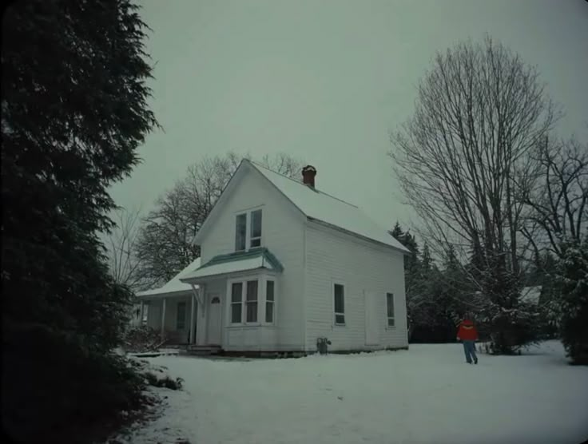

Assim como em outros filmes de analog horror, Longlegs foca na construção de uma atmosfera perturbadora ao invés de uma narrativa direta. O uso de distorções visuais, cortes bruscos e sonoridade minimalista aumenta a sensação de desorientação, enquanto a protagonista tenta entender o que está acontecendo em sua nova investigação. A presença do monstro, com suas longas pernas, surge em momentos de total silêncio ou escuridão, e sua natureza é mantida em grande parte nas sombras, deixando o medo de sua forma real mais palpável do que qualquer revelação direta. O filme nunca explica completamente os eventos, e é essa ausência de respostas que gera um terror psicológico, onde o mais aterrorizante é o que não se sabe ou não se vê.
À medida que a investigadora mergulha mais fundo no caso e começa a revisar antigos arquivos sobre os desaparecimentos, ela começa a perceber que a entidade de "Longlegs" está de alguma forma conectada aos próprios desaparecimentos. A casa, aparentemente normal à primeira vista, parece ser o epicentro dos eventos, e conforme ela explora mais a fundo, ela encontra gravações e imagens antigas que sugerem que os desaparecimentos não são um acaso, mas parte de um padrão. Em um momento crucial, ela encontra uma gravação que revela uma ligação direta entre a casa e a criatura – uma força que não apenas captura fisicamente os moradores, mas que manipula a percepção da realidade ao seu redor. O clímax do filme é marcado pela descoberta de que "Longlegs" não é uma entidade externa, mas sim um reflexo da própria casa, uma construção distorcida de pesadelo que prende todos aqueles que se aventuram por ali. A protagonista se vê cada vez mais imersa nesse mundo distorcido, onde a linha entre o real e o surreal começa a se apagar, e o verdadeiro terror não é tanto o que ela está investigando, mas o que ela está se tornando enquanto desvenda os segredos da casa.
